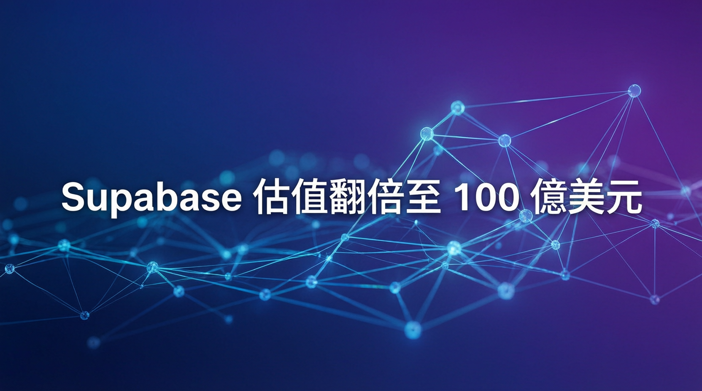

開源資料庫新創完成 5 億美元 F 輪融資，AI 驅動開發熱潮下的最大贏家之一

開源資料庫新創 Supabase 宣布完成 5 億美元 F 輪融資，估值達到 100 億美元（投前估值），較 8 個月前的 50 億美元翻倍。這也是近期 AI 驅動開發熱潮中的最大規模融資之一。
CEO Paul Copplestone 在博客中特別點名感謝 Claude Code 和 Codex 這兩款 AI 程式工具，認為它們「擴大了能夠構建產品的人數」。Supabase 同時也是 Bolt、Figma、Lovable、Replit 等平台的資料庫首選。
本週 Supabase 推出了名為 Multigres 的工具，定位為 Postgres 的「操作系統」。它旨在簡化 Postgres 大規模運行的複雜性，讓開發者能夠集中管理讀副本、自動故障轉移、連接限制、備份等任務。
Copplestone 曾在节目中透露，他拒絕了許多大型企業的百萬美元合約，因為這些合約會帶來產品決策上的壓力。他堅持自己的產品願景不走企業定制路線——這種「反向策略」在創業圈相當罕見，但顯然對 Supabase 非常有效。
本輪由 GIC 領投，現有投資方包括 Stripe，新投資方包括 Georgian 和 Salesforce Ventures。
過去一年內，Supabase 上的資料庫啟動數量增長超過 600%，展現出爆發式成長態勢。
超過六成的資料庫是由 AI 工具創建，顯示 AI 輔助開發已成為主流趨勢。
短短 8 個月內，Supabase 的開發者用戶數量從 500 萬翻倍至近 1,000 萬。
最新估值 100 億美元（約 105 億美元投後），較 8 個月前翻倍，躋身全球最大新創之列。
Supabase 基於開源的 PostgreSQL 資料庫，提供即時 API、身份認證、儲存等功能，讓開發者可以快速構建應用。相比傳統資料庫，Supabase 大幅降低了開發複雜度，特別適合：
本週發布的 Multigres 是 Supabase 最新的重量級工具，被形容為 Postgres 的「操作系統」。它為開發者提供了一個中央管理介面，來處理以下繁瑣任務：
這意味著即使是非專業 DBA 的普通開發者，也能輕鬆管理大規模 Postgres 部署。
「我拒絕參與那些『爛化』開發者工具的趨勢，因為那些百萬美元合約會讓產品變得不再以開發者為中心。」
— Paul Copplestone，Supabase CEO & Co-founder大多數新創公司在成長過程中都會走向企業化服務，但 Copplestone 選擇了一條截然不同的路：堅持產品願景，不被大型客戶的需求牵着鼻子走。這種策略在商業世界看似冒險，卻讓 Supabase 保持了快速的產品迭代和開發者優先的文化。
| 新創公司 | 最新估值 | 領域 |
|---|---|---|
| Supabase | 100 億美元 | 開源資料庫 |
| FirebirdSQL | 非營利 | 開源資料庫 |
| MongoDB | ~140 億美元 | NoSQL 資料庫 |
| PlanetScale | ~10 億美元 | MySQL 分支 |
Supabase 的爆發式成長，是 AI 輔助編碼工具興起最大的受益者之一。當 Claude Code、Codex、Bolt、Lovable 等工具讓「人人都能開發」成為可能時，作為這些工具首選資料庫的 Supabase 自然水漲船高。
這輪 5 億美元的资金將主要用於：
💬 Paul Copplestone（原話）：「AI 模型擴大了能夠構建產品的人數，而 Supabase 的使命是讓這個過程變得盡可能簡單。」